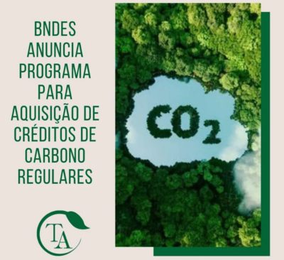
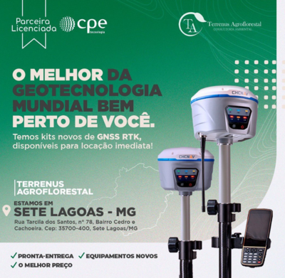
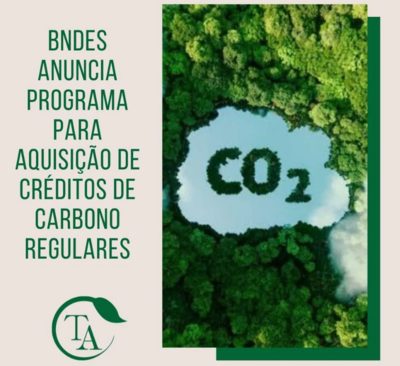
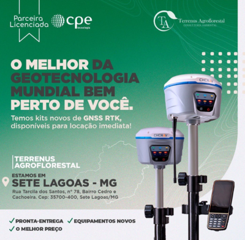

Quem somos
Em 2016 a Terrenus iniciou sua jornada dedicada ao setor ambiental e de regularização fundiária, expandindo suas atividades para as áreas de sondagem
SPT, terraplanagem, geologia e restauração florestal.
Nossa sede está estabelecida em Sete Lagoas, Minas Gerais, oferecendo serviços e consultoria em todo o território nacional, apoiados por uma equipe capacitada e multidisciplinar.
A história da Terrenus é marcada pelo compromisso com a excelência.
Desde a concepção, buscamos não apenas atender, mas superar as expectativas,
contribuindo para a construção de um futuro mais sustentável.
Estamos motivados para continuar essa jornada e enfrentar novos desafios em prol de um impacto positivo em escala nacional.
Destacamos alguns projetos que
lustram nosso comprometimento contínuo com a qualidade e a inovação nos setores de nossa atuação.
Missão, Visão e Valores
Missão
Contribuir para o desenvolvimento dos setores com responsabilidade ambiental e social.
Visão
Ser referencia na prestação dos nossos serviços, trazendo soluções sustentaveis e inovadoras aos clientes.
Valores
Responsabilidade, integridade, evolução e qualidade.
Estrutura da Empresa
conheça
Nossa empresa
Em busca, proposicao e desenvolvimento de solucoes ambientais, sociais, tecnologicas e economicas, a terrenus conta com de tecnicos e consultores especializados. A experiencia coletiva desses profissionais e o maior ativo da empresa. Alem disso, nossos colaboradores administrativos, financeiros e de servicos gerais asseguram o pleno funcionamentro da organizacao.
Categorias de Serviços
A terrenus tem assumido crescente responsabilidade em projetos significativos e complexos, fundamentando-se na experiencia adquirida em diversos desafios. O acumulo e a organizacao de um acervo tecnico, a modernizacao gerencial e a ampliacao de horizontes sociais orientam nosso caminho. Unimos nossa capacidade tecnica para realizar uma ampla gama de servicos. incluindo:


 


